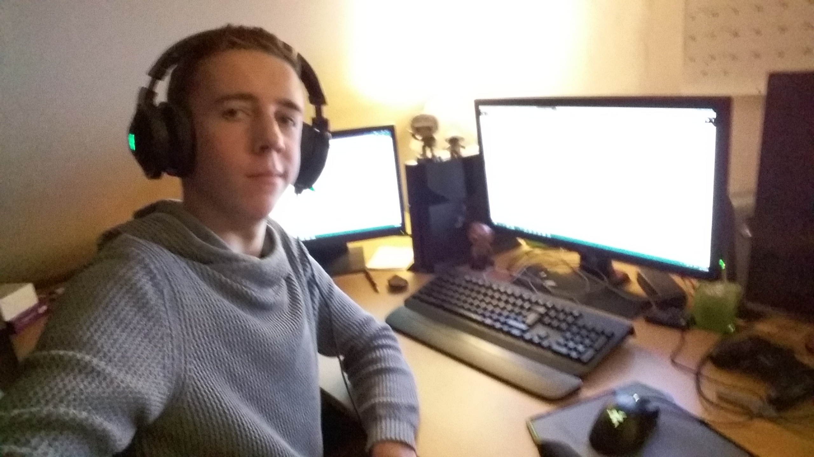

Shall I introduce myself? My name is Axel Dries, I am a student at the Immaculate institute of Oostmalle. I am a diehard gamer, that's just who I am. I play League of Legends the most but I wouldn't call myself the best at it, still trying to climb in the ranking system…. I am also very interested in the hardware of a pc. That's also why I have built many pcs in my life. And I learned it all by myself just by watching a lot, and I mean a LOT of YouTube videos.
IT has always been in my life. My grandpa had a pc and I watched some stupid but oddly satisfying videos. IT was so simple at the time and so incredibly easily made, like a game I played on the PlayStation 1. It was called Odd World. I sank so many hours into that game and I never knew what I was doing. But still I loved it. And that were my few first experiences.
To me IT is everything that has to do with a pc and things you have to program, from gaming to web design. I spend most of my free time on the pc. I usually sit four to six hours a day at my pc. Most of the time is spent on gaming. I try to climb in League Of Legends but it's not as easy as I thought it was. I also play on my PlayStation 4 which is not as good as my pc, but I bought it because my laptop was crap and I didn’t have my pc at that moment. I did make a little game with my friends in class last year. But that's wasn't so fascinating. It was fun nonetheless. But I am surely not an expert at something. I'm more of an amateur at a lot of different things.
What I want to do later with IT? Well that’s a good question. I adore doing things with the hardware of a pc. Building it, fixing it, just having fun with it. But the software side of pcs still interests me. The fact that I can develop things that can help me in common life, that’s the thing that I like about IT. But I don’t have a specific goal set that I want to reach with IT, like what kind of job.
To conclude I love doing things with pcs and gaming consoles. Gaming has become a huge part of my life. I couldn’t live without it. It lets me escape from the real world. And it brings me together with my old friends. And I see a future with a lot of gaming before me. I surely don’t dislike that.
| Goede werkpunten | Slechte werkpunten |
|---|---|
| Ik ben tijdig in het afgeven van mijn taken. | Ik help medeleerlingen die hulp nodig hebben. |
| Ik presteer niet goed onder druk. | Ik moet zorgen dat groepsleden tijdig de taken indienen. |